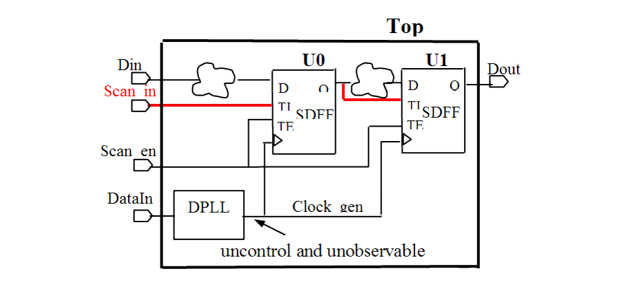
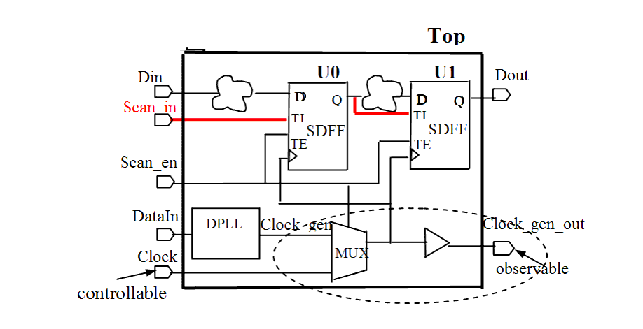

| Description | All flip-flops that are not controllable (e.g., the clock signal is not controllable) are removed from the scan path, This either decreases test coverage or forces the test engineer to use sequential automatic test pattern generation (ATPG). |
| Policy | DESIGN |
| Ruleset | DFT |
| Language | VHDL/Verilog |
| Type | Hardware |
| Severity | Error |
This is an example of invalid Verilog code, followed by a circuit diagram that illustrates the problem:
module ntl_dft24_top(Clock, Scan_en, Test_mode, Din, DataIn, Dout); ... wire Clock_gen; // internally generated clock. DPLL U_PLL (.Data(DataIn), .Clock_pll(Clock_gen)); // Digital PLL // NTL_DFT24 fires -- this generates an uncontrollable and // unobservable internally generated clock (Clock_gen) // Scan FF cell -- SDFF SDFF U1(.D(Din), .CP(Clock_gen), .TI(Scan_in), .TE(Test_mode), .Q(Dout_temp)); endmoduleExample
This is an example of valid Verilog code, followed by a circuit diagram that illustrates the correct approach to avoiding internally generated clocks that are not observable and controllable (see NTL_DFT24):
module ntl_dft24_top(Clock, Scan_en, Scan_in, Din, DataIn, Dout, Clock_gen_out); ... input Clock; // an input port output Clock_gen_out ; // an output port for Clock_gen wire Clock_gen; // internally generated clock. Wire Clock_mux; //a muxed clock, when Scan_ene =1, Clock_mux <= Clock, DPLL U_PLL (.Data(DataIn), .Clock_pll(Clock_gen)); // Digital PLL //generate a uncontrollable internally clock - Clock_gen MUX I0 (.A(Clock_gen), .B(Clock), .S(Scan_en) , .Z(Clock_mux)); // OK -- a mux cell to make it controllable // Scan FF cell -- SDFF SDFF U1(.D(Din), .CP(Clock_gen), .TI(Scan_in), .TE(Test_mode), .Q(Dout_temp)); BUF I1(.A(Clock_mux), .Z(Clock_gen_out)); // OK -- makes it observable endmodule